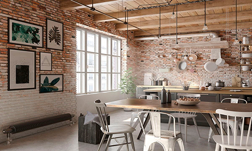

Techos altos con lámparas de araña, gruesas cortinas y sedas y terciopelos en los tejidos son característicos de este estilo sofisticado y profuso en detalles donde la abundancia es fundamental. Piezas de mobiliario de maderas nobles, patas torneadas, cuberterías de plata y candelabros de brazos buscan recrear ambientes poderosos donde la simetría, el peso de la historia y el romanticismo son señas de identidad.
Su origen se remonta a los años 50 neoyorquinos, cuando los artistas comenzaron a instalarse en las fábricas y naves abandonadas de la ciudad en busca de espacio y luz para trabajar. Hierro, madera, cemento, hormigón y otros materiales de construcción se muestran sin enmascarar en las viviendas decoradas con este estilo que es perfecto para personas creativas e innovadoras.
La premisa menos es más define esta tendencia decorativa que se caracteriza por la búsqueda de simplificar al máximo y prescindir de los elementos que no resulten esenciales. Original de Estados Unidos en la década de los años 60, este estilo es perfecto para aquellas personas que se sienten cómodas en espacios simples y serenos. Pocos muebles, líneas rectas y ausencia de ornamentaciones superfluas en los espacios diáfanos consiguen, sin embargo, crear un estilo que apuesta por ambientes en los que se destila calidez y belleza.
A través de la conjugación de distintos elementos, con esta tendencia se busca recrear la esencia de un lejano país alejado de occidente. La fascinación por otras culturas y su artesanía se reflejan en este estilo que evoca ambientes cálidos y luminosos con una estética pegada a la tierra y a la cultura local a través de elementos elaborados de forma artesanal. Tejidos estampados, muebles y accesorios confeccionados en madera y piezas de estaño, cobre o latón son característicos de esta tendencia cálida y acogedora.